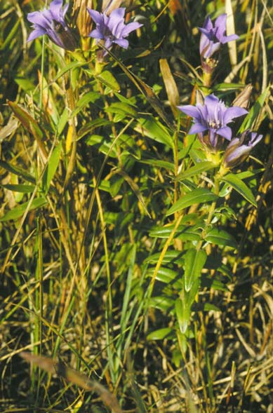
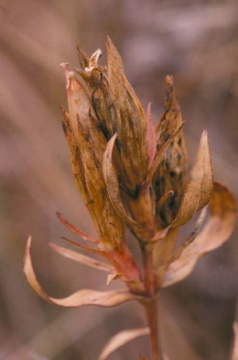

Gentiana Puberulenta
Family: Gentianaceae
Downy Gentian
Swink/Wilhelm #10

Click to view larger photo
FLOWERING: September - October
SEED TIMING: Late October
HABITAT: Dry prairie
DIAGNOSTIC FEATURES: 8 to 18 inches high. Leaves firm, lanceolate, or the lower oblong, pale beneath, narrowed or rounded at the base. Tight cluster of stemless, deep-blue, 5-pointed, open flowers without fringe.
TO PICK: Entire plant looks withered. Seed capsule light brown, splits open to show hundreds of small, cream-white, winged seeds. Pick whole capsule or bend capsules over plastic bag to allow seeds to fall in.